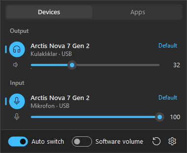

MiniAudio
Reset device
NEWReplug your USB headset
without touching the plug.
Some wireless headset dongles stop applying volume changes until they’re unplugged and plugged back in. Reset device reconnects the dongle by software.
USB outputs only

How it works
-
1
Click
At the bottom of the flyout, or
right-click the tray icon → Reset device. -
2
Approve the Windows prompt
Windows asks for administrator rights
to reconnect the USB device. -
3
Back in seconds
Your headset reconnects and becomes
the default output again.